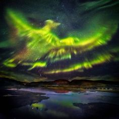

8 Ветер. Май под покровом Майи
...Этот ветер, который я почувствовала еще в апреле. Ветер, который дул весь май и несколько дней назад разбушевался и устроил катастрофу. Ветер, из-за которого в мае выпал снег. В этом году "май" оправдал свое имя - май от слова "маяться", май от слова "майя".. вечная иллюзия в которой мы маемся и ходим по заколдованному кругу. Не помню, когда в последний раз на 9 мая шел дождь? Когда еще тучи были настолько плотные, что их не удалось разогнать?
Казалось, что этот ветер был наделен сознанием. Он пришел чтобы разрушать, чтобы насытиться чужими страхами и болью, чтобы забрать кого-то с собой. Невольно вспоминается рассказ Рея Бредбери "Ветер":
"Над домом огромное туманное облако, ветры со всего мира! Та самая буря, что год назад опустошила Целебес, тот самый памперо, что убил столько людей в Аргентине, тайфун, который потряс Гавайские острова, ураган, который в начале этого года обрушился на побережье Африки. Частица всех тех штормов, от которых мне удалось уйти. Он выследил меня, выследил из своего убежища в Гималаях, ему не дает покоя, что я знаю о долине Ветров, где он укрывается, вынашивая свои разрушительные замыслы. Давным-давно что-то породило его на свет… Я знаю, где он набирается сил, где рождается, где испускает дух. Вот почему он меня ненавидит — меня и мои книги, которые учат, как с ним бороться. Хочет зажать мне рот. Хочет вобрать меня в свое могучее тело, впитать моё знание. Ему нужно заполучить меня на свою сторону!"
Ветер принес опасность. Самое поганое заключалось в том, что я знала заранее о его приходе, но ничего не сделала... Хитрые вещие сны меня предупреждали. В тот момент, когда надо было действовать, я не придала значения складывающейся цепочке событий. Словно происходящее было сном, который вот-вот закончится, все случится по законам жанра я открою глаза и вновь все станет хорошо, словно на свете нет ничего необратимого, нет смерти, есть только вечное пробуждение...
Вот только почему этот сон до сих пор не закончился? Сколько еще десятков, сотен, миллионов лет надо, чтобы все вернулось на круги своя и она снова была рядом со мной, такая же рыжая и живая, какой я знала ее последние шесть лет? Как проснуться?
Почему её больше нет? Еще недавно она была со мной, я продолжаю чувствовать её! Мне не хватает воздуха. Словно я потеряла руку. Что это - фантомная боль?
В мае произошло то, чего я так боялась в своих снах и до сих пор мне хочется проснуться, до сих пор мне порой кажется, что вокруг меня все - какой-то бредовый сон, вскоре я проснусь и то существо, которое мне крайне дорого, вновь будет со мной.
Ведь я же чувствую ее рядом с собой! Чувствую, что стоит мне протянуть руку, немного сместиться в сторону, и мы снова будем вместе. Все эти шесть лет я занималась "крайне важными" делами, когда она была рядом, а я не могла даже отвлечься и уделить ей минутку. Как же мало мы с ней говорили! Она была рядом, в то время как я была где-то за миллион километров, она лежала у меня на коленях и сладко дремала. Она и была тем незаметным пятым элементом, который наполнял мою жизнь счастьем. Я искала тайны и скрытые смыслы где-то в далеком космосе, в то время как главная тайна бытия уже была со мной. Когда она оставила наш физический мир, я поняла, что мне выпало безмерное счастье, которое выпадает немногим. Пока другие ищут Бога, я уже его встретила, и Бог был той нитью, той любовью, для которой не существует никаких барьеров, не существует жизни и смерти. Мне был сделан огромный подарок - мне удалось узнать это чувство, сотканное из чистого света, без примесей, без эгоизма, без какой-либо корысти. Как же поздно я все осознала!
"Это голоса двенадцати тысяч, убитых тайфуном, семи тысяч, уничтоженных ураганом, трёх тысяч, истреблённых бурей. Тебе не скучно меня слушать? Понимаешь, в этом вся суть ветра, его плоть, он — полчища погибших. Ветер их убил, взял себе их разум. Взял все голоса и слил в один. Голоса миллионов, убитых за последние десять тысяч лет, истязаемых, гонимых с материка на материк, поглощённых муссонами и смерчами. Боже мой, какую поэму можно написать!" (Бредбери, "Ветер")
Я же знала заранее! Иногда мне кажется, я могу корректировать временные линии. Почему я ничего не сделала? Почему не использовала силу намерения в критический момент? Почему?
Задним числом я поняла, что у меня был шанс ее спасти и удержать ее в нашем физическом мире, но я ничего для этого не сделала... Видимо, уже свыклась с ужасом ночных кошмаров, что однажды ее потеряю в этом мире, и когда возникла реальная опасность, не предала этому значению, словно это был очередной кошмарный сон в череде кошмаров. Теперь единственное место, где я могу с ней быть, чувствовать под рукой ее рыжую теплую шерсть - это тот заповедный край, дорогу в который прокладывают осознанные сны. Но как назло - осознанные сны вдруг прекратились. Словно разладился какой-то механизм, отвечающий за осознанные сновидения.
Я перечитала множество соотвествующей литературы, прочитала книгу Лабержа. У Лабержа в одном месте значилось: 21 раз повторите своё намерение о том, что вы желаете увидеть О.С. Я дополнила эту технику, в результате чего получила неожиданный результат. Параллельно я начала более серьезно практиковать визуализацию объектов. Мне помогло рисование и все, что с ним связано.
Техника:
Представляю себе сцену, в которой появляется, словно артефакт, большая (или не очень) цифра. Это могла быть как статуя, так и дата на календаре. Когда сцена начинает выглядеть реалистично, когда уже слышу звуки и чувствую запахи сцены (не представляю себе, а именно вижу, слышу и т.п.), повторяю себе о своем намерении поддерживать осознанность. И так от 1 до 21.
При использовании этой техники досчитать до 21 мне удалось всего один раз. Все остальные разы происходило засыпание, причем из любого состояния в любое время суток. Я была крайне удивлена тому, что могу засыпать в любое время суток. Правда при переходе к следующей цифре, когда до О.С. уже оставался один шаг (не хватало только тактильных ощущений), при произнесении намерения поддерживать осознанность происходило либо пробуждение, либо терялся контроль и начинался обычный сон.
Почему не возникали осознанные сны? Вероятно, это можно объяснить какой-то внутренней блокировкой, возникшей после произошедших со мной событий. Полностью отключилась критическая функция оценки реальности. Я была в самых чудных местах, в самых необычных эпостасях, но ничего из происходящего меня не удивляло. Сны мне казались фантастическими фильмами, в которых все естественно, и межгалактические полеты никого не удивят. Когда мне снилось что-то из ряда вон, мое подсознание говорило мне - ты смотришь фильм по телевизору, все нормально. А те моменты, когда оказывалась на месте протагониста, подсознание просто опускало. Мне никогда не снились фрагменты из моей реальной жизни, моей работы. Все сюжеты формировались на основе прочитанных книг и некоторых фильмов. Вероятно, так происходит со всеми, у кого жизнь в своем внутреннем мире протекает гораздо ярче, чем в реальности. Поэтому и критический блок "сон ли это" срабатывал не всегда. Вчера, когда я летала и случайно залетела в дом кота, висящий в воздухе, который принял меня как лучшего гостя, меня это ничуть не удивило. Я сказала себе - во сне и не такое возможно. И при этом умудрилась не сделать дальнейшего вывода, не осознать, что я сплю!
В реальности я поставила себе кучу "маячков", по которым проверяю реальность на "реальность", задаю себе вопросы после каждого странного события - такое вообще возможно? В результате таких проверок где-то с полсотни в день наберется. Все маячки срабатывают четко (в 95% случаев), а вот во сне.. сегодня мне снилось, как общалась с Лабержем во плоти по поводу того, являются ли О.С´ы чисто субъективным явлением (по прочтении книги у меня сложилось ощущение что он думает именно так), или же в одном О.С. может участвовать несколько человек (чему я была свидетелем). Мы долго спорили, а мне даже и в голову не пришло, что этот спор произошел во сне!
Какова же была моя радость, когда после стольких попыток я под утро увидела настоящий яркий осознанный сон, каких не видела уже давно. Я все осматривала - все было таким настоящим, даже более настоящим, чем обычно. Осмотрела свои руки, каждую прожилку, каждую морщинку, осмотрела пейзаж вокруг, взлетела.. И опять столкнулась с тем явлением, которое меня преследует. Я взлетела легко и быстро и сразу же поднялась на огромную высоту. При попытке спуститься как и раньше ощутила, что земля меня отталкивает, выталкивает еще больше ввысь. Я прибегла к трюку с падением, чтоб спуститься, но в результате чуть было не потеряла контроль над сном. Спуститься удалось, хотя возникло то неприятное чувство поднимающейся диафрагмы, которое мы испытываем при падении. В О.С. я все прекрасно помнила, и свои цели, и даже вспоминала некоторые советы из книги Лабержа, в частности о вращении. Я выполнила почти всю задуманную программу, но в какой-то момент все-таки потеряла контроль и у меня случилось ложное пробуждение. В момент пробуждения я заметила, что вещи лежат как-то неправильно. Ложное пробуждение. Затем снова проснулась. По-настоящему. Если, проснулась, конечно...
Сегодня как никогда я поняла, насколько же важны для осознанных сновидений дисциплина и самоконтроль. Под утро я уже почти отчаялась и хотела все послать к чертям и проснуться, как заставила себя успокоиться и применить мою технику "21". Техника дала свои результаты. Мне уже не хотелось спать (я спала больше 9 часов), но при выполнении техники легко уснула. В этой технике не надо стараться изо всех сил обязательно уснуть - это приводит к отрицательному результату. Достаточно сказать себе- даже если я сейчас не усну - ничего страшного. Я все равно практикую визуализацию, а это само по себе крайне полезно, так что время я не потеряю. Каждый раз, когда я так делала (и ночью, и среди дня) я непременно засыпала.
Позавчера и третьего дня во время медитации перед сном мне пришла странная, немного бредовая мысль.
В этот момент я ощущала себя бесконечно длинным стержнем, протянутым из центра земли к звездам, по которому снизу вверх шел поток энергии. Такое ощущение у меня возникает не в первый раз. Мне подумалось, что мир - это хорошо сложенный механизм, в котором все имеет свое предназначение и человек тоже. Все беды и горести людей от того, что они забыли о своем истинном предназначении, а оно слишком просто. В этот момент я ощутила, что выполняю свое предназначение, что в этом механизме я - проводник, который проводит энергию от центра земли в космос. У людей возникают экзистенциальные кризисы, они ищут свое предназначение в чем-то невообразимо сложном и высоком, для чего нужно исписать сотни страниц буквами или интегралами, частными производными, рядами фурье... и везде, чем бы они не занимались, они наталкиваются на дуализм - на корпускулярно-волновой дуализм, на противоречие между идеальным и материальным, на "я" и "не я". жизнь и смерть... в то время как все ЕДИНО, если человек вдруг подключается ко всеобщей "электрической" цепи. Я ощущала учащение сердцебиения, я видела свет, который поднимался по позвоночнику, и я была безусловно счастлива. Для меня не существовало дуализма, не существовало смерти... Вначале у меня не получалось пропустить свет через участок, именуемый в индийской философии "анахата", сердечная чакра. Как и летом, я заставила себя почувствовать любовь ко всему миру, но вначале лишь лились слезы, я чувствовала боль от утраты дорогого мне существа в реальном мире (именно эта боль и закрыла на тот момент этот участок, а так же участок в области горла), но когда я попросила Землю о помощи и сказала ей, что люблю ее, энергетическая волна начала подниматься.
Уже несколько месяцев я не практиковала кундалини, поскольку моя практика привела к странным результатам - помимо того, что я постоянно чувствовала присуствие энергии (как тепло, покалывание и т.п.) в области между бровей и в макушке головы (что не вызвало у меня опасений), я еще чувствовала энергетический "обруч" вокруг головы, который в течение дня никуда не девался (а вот это уже меня обеспокоило). В сущности, за эти месяцы ничего не изменилось, но я крайне "соскучилась" по захватывающему ощущению подъема энергии.
Чувствую, что все пошло на поправку. Ветер утихает. В мае я сказала, что он утихнет в начале июня. Похоже, так и случится. Я соскучилась по солнцу!
Да, я не вижу пока что способа вернуть ее в наш физический мир, но все равно она всегда со мной, теперь я осознала, как же я ее люблю. И в осознанных снах я буду приходить к ней.. каждую ночь! 